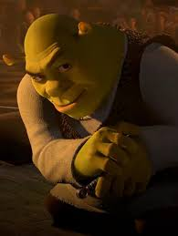

CARTE 1
Des trucs marqués ici.
Des trucs marqués ici.
D'autres trucs marqués ici.
Shrek.
ici on peut voir shrek qui se baigne dans une mare de boue. C'est très amusant parce que shrek adore la boue et il se sent chez lui quand il est dans la boue. La boue est son élément naturel, et il aime s'y rouler et s'y prélasser toute la journée.
sur notre site !
impossible malheureusement...
Le goùt de l'eau du marais de Shrek est très spécial, il est très doux et très naturel.